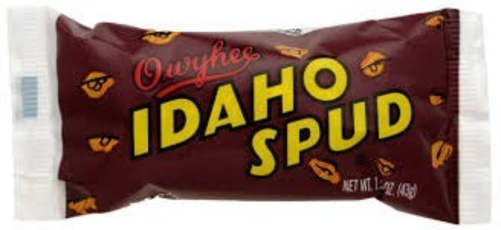

About Me
Hello, My name is Madalyn Querubin and I live in Idaho. I grew up in Southern California, but moved to Idaho to attend BYU-Idaho, where I received an Associates of Science. There, I met my husband, and we have 3 little girls. I am currently pursuing a degree in Software Development, and in my free time I enjoy crocheting, sewing, baking, reading, playing volleyball, and playing video games with my husband.
Idaho, USA

Idaho is the leading potato producer in the US, so much so that the potato had been designated the state vegetatble. Idaho is a north-eastern state, and it's lanscape is made up of moutains, hills, rivers, and farmland. As of 2023, it's population was 1.965 million.